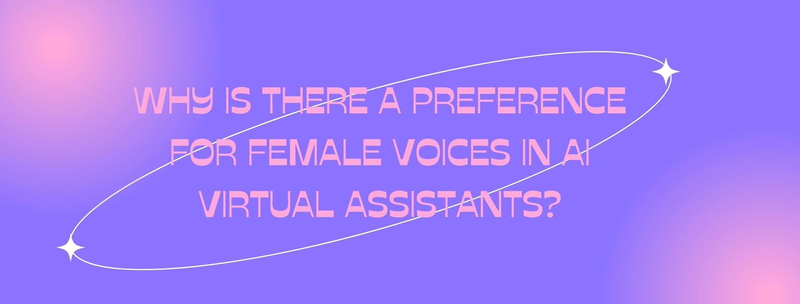

If you ask Amazon Alexa if it is a woman, it will answer "I'm not a woman, I'm an AI". In fact, the majority of AI virtual assistants are designed to be genderless (think of AI virtual assistants like Siri, Cortana, or Google Assistant). After all, they are simply made of code. Surprisingly, most of these AI virtual assistants use clear female voices when interacting with users. But, why is that?
Research has shown that users tend to treat computers and other tech devices as if they were humans. In fact, some researchers have even claimed that "interactions with computers, TV, and new communication technologies are identical to real social relationships". This also applies to how users react to voices coming from tech devices, as specific gender stereotypes are elicited depending on whether they hear a female voice or a male voice.
A research study conducted at Stanford University had a group of participants complete some tasks using a computer which had either a female voice or a male voice. The tasks involved hearing a virtual tutor explain some facts about a variety of topics and answering some questions. After completing the tasks, researchers assessed whether participants had activated any gender stereotypes.
Results showed that participants rated the sentences produced by the male voice as more valid and friendly than the sentences produced by the female voice. Likewise, participants rated the female voice as being more knowledgeable about "feminine" topics (e.g., love, relationships) and the male voice as being more knowledgeable about "masculine" topics (e.g., computers, engineering). Given that there were no other gender cues other than the voice, researchers concluded that a gendered voice is enough to elicit gender stereotypes.
Based on gender stereotypes, female voices are perceived as helpful, docile, subservient, and compliant, among other things, whereas masculine voices are perceived as dominant, respective, and commanding. If it is true that hearing the voice of an AI virtual assistant activates these stereotypes, as the research seems to suggest, then technology would be reinforcing pre-existing gender biases and roles and, more importantly, would be teaching these roles to new generations as well.
Why are female voices still the default in AI virtual assistants despite what the research shows? According to some internal studies conducted by tech companies, users have a preference for female voices because women are better at enunciating (i.e., they speak more clearly), and sound more relaxed, which make them more agreeable overall.
However, it is worth mentioning that some tech companies are coming up with alternatives to avoid reinforcing gender stereotypes in their AI virtual assistants. For example, recently, an AI virtual assistant named Q was created using a genderless voice. This genderless voice was developed by editing and altering voice recordings from two dozen people. A weakness of this alternative is that the final voice might sound fake to many users, as it has been developed through editing and does not resemble the way a real human would speak.
Another alternative is to give users a choice. That is, developing male and female voices for AI virtual assistants and then have users decide which one they prefer. This alternative is better in that the final voices sound more human. For example, the team behind Amazon Alexa recently developed Ziggy, a masculine voice for the assistant. Current users can change the default feminine voice to this new voice and can also change the wake word ("hey, Ziggy" instead of "hey, Alexa"). Despite offering this option, some have complained that the feminine voice is still the default.
Altogether, the feminization of AI voices is a complex problem with no current solution. Although some alternatives have been proposed, none of them seems to be perfect. We will have to wait and see how AI virtual assistants change in the coming years.